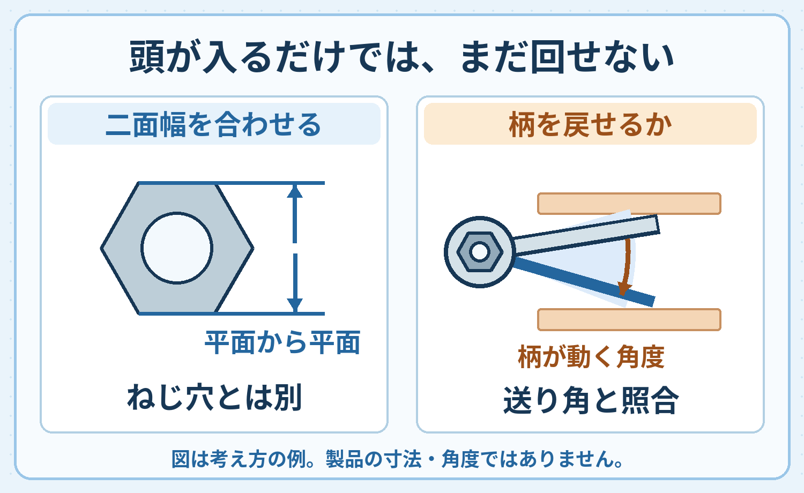
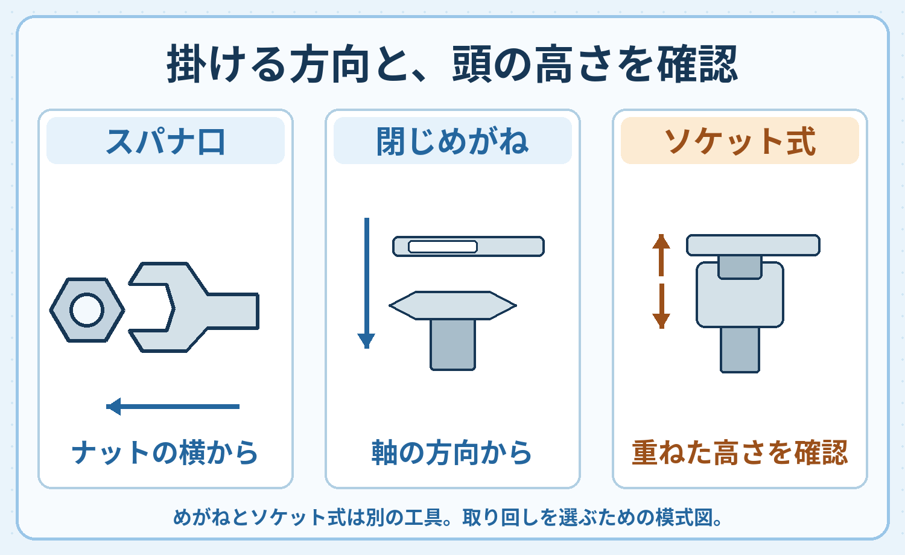
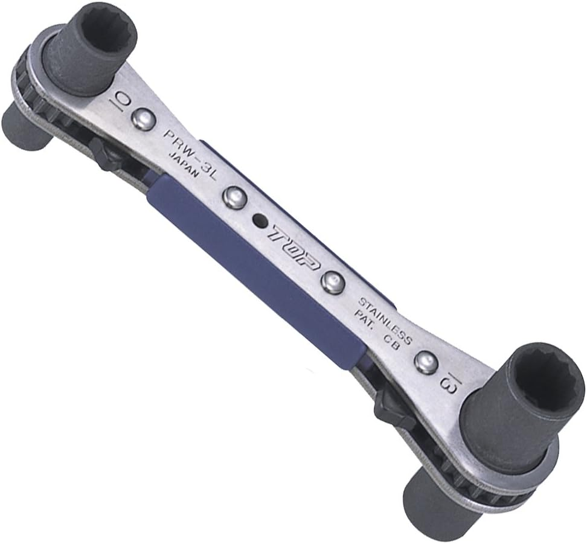
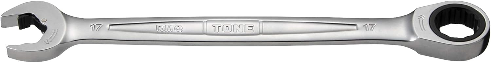
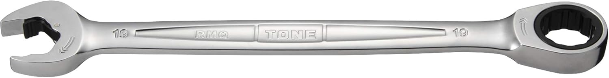
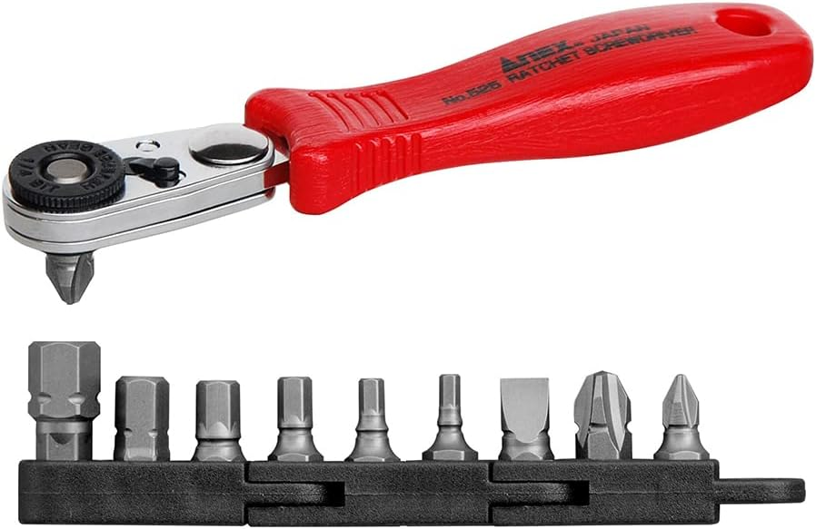

向いている人
- ラック工事でナット締結が多い人
- 違う二面幅のナットが混在する現場が多い人
- 狭所でスパナの掛け直しが多い人
最終内容更新：
電気工事のラックや電路支持金具で同じナットを何度も回すなら、ラチェット機構で柄を戻せる工具が役立ちます。選ぶ順番はナットの二面幅 → 頭が入るか → 柄を戻す余裕です。締付けトルクが指定されている場合は、最後の管理に使う工具も分けて考えます。

後輩「3分用」と聞いたら、レンチの数字も分かりますか？

先輩3分はねじの呼び。レンチはナットの向かい合う平らな面の間で選ぶよ。

対辺13 mmのナットにPRW-3Lの頭が正しく掛かっても、近くの金具で柄が15°しか動かないと仮定すると、同機種の送り角20°に届きません。次に見直すのはナットのサイズではなく、柄が動ける方向や別工具の送り角です。
同じ二面幅が続くなら単体、複数あって対応範囲に収まるなら多サイズ型が候補。回数が少なく今の工具で無理なく届くなら、無理に買い足す必要はありません。

| 工具 | 向いている状況 | 確認する点 |
|---|---|---|
| ラチェットめがね・コンビ型 | 掛けたまま柄を戻して繰り返したい | 閉じめがねの入る向き、厚み、送り角 |
| スパナ・モンキー | 上に隙間がなく横から掛けたい | 合う寸法、十分に掛かるか、掛け直しの余裕 |
| ラチェットハンドル＋ソケット | 対象に合うソケットを交換して使い分けたい | ソケットを含む高さ・深さと差込角 |
固定頭と首振り：柄をまっすぐ出せるなら固定型、手前の部材が柄に当たるなら首振り型も候補です。首振りの設定角とラチェットの送り角は別で、曲げても十分に座らない・戻せない場合は使いません。
早回しと指定トルク：ラチェットの送り音は、指定トルクに到達した合図ではありません。手順でトルク指定があれば、対象に合うトルクレンチやトルクドライバーを使用します。仮締め専用とされる型式で本締めをせず、工具の許容用途を確認します。
今回の4候補は、主工具・追加工具・補助工具で役割が違います。
| 候補 | 役割 | 向いている人 | 注意点 |
|---|---|---|---|
| PRW-3L | 主工具・マルチ対応 | 8・10・12・13 mmの対象が混在する人 | 同サイズ連続では単体の方がテンポが出ることがあります。 |
| TONE 17mm | 対辺17 mmの連続作業 | 17mmをよく使う人 | サイズ違いが混ざる日は持ち替えが増えます。 |
| TONE 19mm | 対辺19 mmの連続作業 | 19mmをよく使う人 | まず1本だけで広く対応したい人には不向きです。 |
| アネックス No.525-10B | 狭所補助 | 狭所でビットの合うねじを回す人 | 外六角ナット用レンチではありません。 |
対象の二面幅が混在していて、8・10・12・13 mmに収まるならPRW-3L。実寸が17 mmまたは19 mmで同じサイズが続くなら、合う単体型を比較します。
4候補を対応寸法と用途で比較します。ビット式は外六角ナット用とは別枠です。

公式仕様は二面幅8・10・12・13 mm、送り角20°。この4サイズが混在するなら持ち替えを減らせる候補です。
対辺17 mm・19 mmには使えません。ロングソケット部が入る高さも確認します。
同サイズばかりなら、その寸法だけを使う単体型も候補です。
この4サイズの中で複数を使う電路支持金具の作業に向きます。

二面幅が17 mmと確認できた六角ボルト・ナット向けの単体です。
使うサイズがほぼ固定されている工程では、マルチより迷いなく回せてテンポを出しやすくなります。
一方で、サイズ違いが混ざる日には持ち替えが増えるため、PRW-3Lとの役割分担で考えると使いやすいです。
対辺17 mmが続き、薄形の頭と柄が無理なく入る作業に向きます。

二面幅が19 mmと確認できた六角ボルト・ナット向け。メーカー公式資料はRMQ-19を参照しました。購入先の品番や内容が同じか、購入前に確認してください。
17mmと19mmを分けて持つ運用なら、作業中のサイズ判断がはっきりしやすくなります。
工具本数は増えますが、工程が固定されている現場では追加する価値があります。
対辺19 mmが続く工程で単体を分けておきたい人向けです。

狭所で適合するビットが必要なねじ向けのラチェットドライバーです。外六角ナット用めがねレンチに置き換えられません。
ビットの形と長さ、ビットを付けたときの頭の高さと振り幅を確認します。
ビット工具を使うねじがあるときに比較してください。
機器裏などで、適合するビットを用いるねじの作業がある人向けです。
手持ちと対象寸法を照合し、合わないものだけを検討します。狭くて困るなら、頭の厚さと柄の可動域のどちらが原因かも切り分けます。
PRW-3L。対象が対応する4サイズ内で、ロングソケット部が納まる場合の候補です。
TONE 17mm。17mmを連続で回す工程ならテンポを出しやすいです。
TONE 19mm。19mm中心のラック工事が多いなら追加候補です。
アネックス No.525-10B。合うビットが必要なねじだけ、別枠で検討します。
新人先に実際の二面幅を確認します。数字が合っても柄が戻せないことはありますね。
先輩そう。指定トルクがあるなら、早回し用とは別に、最後の締付けに合う工具が入るかも確認しよう。
購入前に、ラチェットの動きや作業テンポを動画で見ておくと、使いどころをイメージしやすくなります。
公式資料確認：
取り付け・締付けの条件は設備や金具の指示、工具の用途・許容条件は対象型式の最新資料を確認してください。
※当サイトはAmazonアソシエイト・プログラムに参加しており、適格販売により収入を得ています。